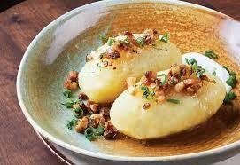

Pagrindinis

Didžkukuliai arba cepelinai – didžiuliai tarkuotų ir/arba grūstų virtų bulvių kukuliai su mėsos, varškės, džiovintų grybų ar kitokiu įdaru.
Reikalingi produktai:
- 2.5 kg bulviu
- druskos
- 2-3 saukstu (40-60g) bulviu krakmolo
Mesos idarui:
- 400g maltos kiaulienos
- 1 svoguno
- 2 saujeliu krapu
- 1 saukstelio druskos
- pipiru
- aliejaus kepti
Gamybos eiga
- Nulupame virtų bulvių lupenas (tik bulvės būtinai turi būti visiškai atvėsusios, nes jei šiltas maišysite su krakmolu, masė ne standės, o priešingai – skystės) ir bulves sumalame mėsmale.
- Mėsos įdarui smulkiai supjaustome svogūną, jį švelniai pakepiname su aliejumi, kol suminkštės ir sumaišome su malta mėsa bei kitomis sudedamosiomis dalimis. Rankomis suformuojame nedidelius kukuliukus ir atidedame į šalį.
- Žalias bulves nuskutame ir smulkiai sutarkuojame.
- Pasiruošiame didesnį dubenį ir naudodami sūrmaišio audinį ar dvigubą–trigubą marlę nusunkiame į jį bulvių tarkius, tačiau neišspaudžiame paskutinio lašo – tegul tarkiai lieka šiek tiek šlapi, tada išvirę cepelinai bus minkšti. Nusunktą skystį ramiai paliekame, per 10 minučių ant dugno nusistovės krakmolas.
- Sunką atsargiai nupilame, o dubens dugne nusistovėjusį krakmolą sukrečiame į tarkuotų bulvių masę. Jei krakmolo susidarė nedaug, įberiame dar 2–3 šaukštus pirktinio.
- Į nuspaustus tarkus suverčiame maltas virtas bulves, pasūdome ir gerai gerai suminkome.
- Iš gerai išminkytos bulvių masės drėgnomis rankomis formuojame norimo dydžio didžkukulius: ant delno išplojame apie 1 cm storio blyną, dedame įdaro, apspaudžiame jį bulvių mase, delnais „apglostome“ didžkukulius, kad paviršius būtų glotnus, lygus, be įtrūkimų.
- Užkaičiame didelį puodą su daug vandens, gerai pasūdome. Į stiklinę ar dubenėlį įsipilame šalto vandens, suberiame šaukštą krakmolo, išmaišome ir supilame šį mišinį į verdantį vandenį puode. Didžkukulius panardiname į verdantį vandenį ir verdame apie 20 min. (didžkukuliams iškilus į paviršių, kaitrą sumažiname iki minimumo).
- Patiekite su spirgučiais, grietine ar padažu.